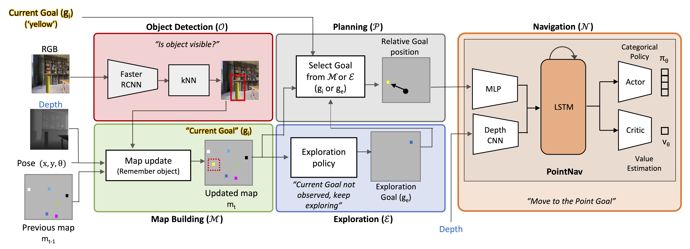

Abstract
Our work focuses on the Multi-Object Navigation (MultiON) task, where an agent needs to navigate to multiple objects in a given sequence. We systematically investigate the inherent modularity of this task by dividing our approach to contain four modules: (a) an object detection module trained to identify objects from RGB images, (b) a map building module to build a semantic map of the observed objects, (c) an exploration module enabling the agent to explore its surroundings, and finally (d) a navigation module to move to identified target objects. We focus on the navigation and the exploration modules in this work. We show that we can effectively leverage a PointGoal navigation model in the MultiON task instead of learning to navigate from scratch. Our experiments show that a PointGoal agent-based navigation module outperforms analytical path planning on the MultiON task. We also compare exploration strategies and surprisingly find that a random exploration strategy significantly outperforms more advanced exploration methods. We additionally create MultiON 2.0, a new large-scale dataset as a test-bed for our approach.
Approach: Modular-MON
 In the MultiON task, the agent is given the current goal gi from a set of N goals {g1, g2, ..., gN }. Once the agent has reached gi and generated the Found action successfully, it is given the next goal gi+1. This continues until the agent has found all the goals in the episode. In Modular-MON, we take a modular approach to multi-object navigation by employing the following modules: (1) Object detection (O), (2) Map building (M), (3) Exploration (E) and (4) Navigation (N ). These modules are intuitively weaved together. Modular-MON identifies objects (O) by observing the environment and builds a semantic map (M) by projecting information about category labels of the objects (i.e. semantics) in the field of view. If the agent has not yet discovered the current goal, gi, it will continue to explore (E). Once the current goal has been discovered, Modular-MON plans a path from its current location to the goal, and generates actions to navigate (N) towards the goal. We experiment with different exploration and navigation strategies to systematically investigate their contribution to the agent performance.Results
We also investigate how our Modular-MON performs on the Object Goal Navigation (ObjectNav) task in the above table. We observe that the performance deteriorates as we increase target objects, for a fixed step limit (rows 1-3). Our OracleSem performs similarly on the Habitat ObjectNav 2022 and MultiON 2.0 1ON val set (rows 5,6) when we set the step limit to 500 steps, following ObjectNav task setting. In ObjectNav, OracleSem performs better (rows 6,7) with Uniform Top-down Sampling w/ Fail-Safe (Uf) than Frontier (F). Moreover, our PredictedSem performs better on MultiON2.0 than on ObjectNav (rows 8,9).
Failure Cases
Citation
If you find our work useful, please cite our paper below.